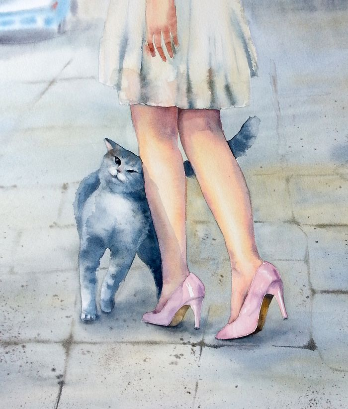
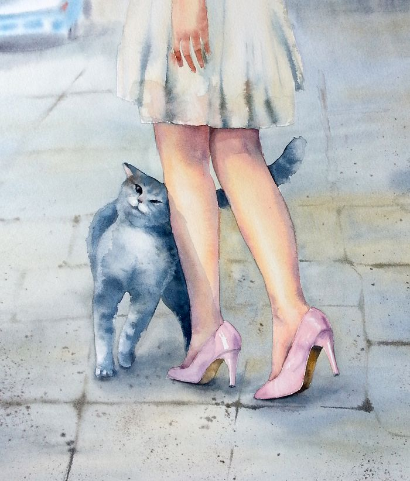

Why we love cats–arguably the best nocturnal pets! This webpage is dedicated to how cats express themselves through unique and complex gestures. Many people would often describe cats as household pets that are not as expressive as dogs for example. However, that is not the case, it's just that–cats have different forms of communication that aren’t as evident/blatant compared to other household pets. Their main form of communication is meowing, it serves as their language in order to express demands, concerns, and affection. Other than that, there are many other ways of expression which is why I decided to focus on three things: vocal expression, eye talk, and marking.
Vocal expression has many categories, two being murmur and strained intensity patterns. Murmur refers to the act of purring which according to research, typically showcases signs of submission and harmlessness. It is also the feline equivalent of smiling, but note that it does not always mean good for these cute animals. Sometimes, purring may be a sign of self-soothing due to discomfort. Cats may no longer purr or they purr less because they already feel safe, comfortable, and in control. Moving on, strained intensity patterns refer to the way that cats hiss. They hiss to show discomfort, fear, pain, and frustration. Part of hissing includes the changes in body expression. For example, cats would often arch their backs and flatten their ears along with hissing sounds. Another form of expression for these household pets is through their eyes–the way that their pupils dilate, eyelids droop, blinking slows down, and soulless staring frequents. When their pupils dilate, it is typically a sign that they are interested or they have strong emotions toward that certain subject. When they have drooping eyelids, it means that they feel comfortable and safe. When they slowly blink, it acts as the kitty kiss for these feline species. And when they soullessly stare at something or at someone, they want or aim to show dominance over that territory. Speaking of, cats are very known to be territorial species and they express this through marking. They leave their mark by the act of rubbing their heads and bodies on an object or to a person’s legs, arms, face, neck, etc. This is an act of ownership–claiming dominance and power.
In conclusion, we love cats because they are unique, complex species. Wherein despite their seemingly “I don’t care” attitude and aura, it actually goes deep and beyond what is on the surface. Cats are complex creatures, they aren’t simple; in fact and based on personal experiences, they are subject to major mood swings in terms of expressing themselves. However, this complexity is a driving force as to why we love them. Their uniqueness, varying approaches, and “hidden” affection showcases the beauty in the complexity of life form.
 
